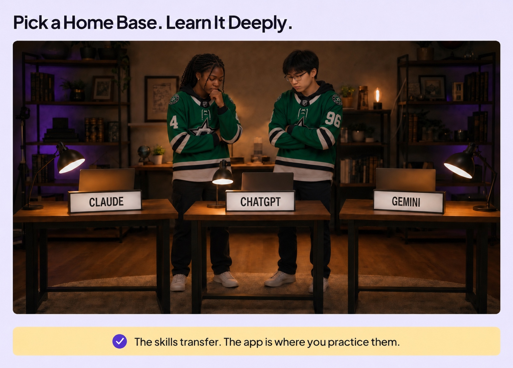

Your Home Base
Three photographic scenes follow one student planning Art Night. The home-base illustration now places ChatGPT in the center, beneath the two students, with Claude on the left and Gemini on the right.
Choose an excerpt, then switch versions to compare the same passage. Each excerpt includes the surrounding narration.
Shipped locally · 3:10 · Original audio copied exactly · Updated lesson illustration and video installed · Queued for batch deployment.
The new scenes

Develop an idea. ChatGPT helps turn a school-event idea into a draft.

Think through options. Claude helps compare two plans.

Connect the work. Gemini appears alongside the event document and email.
ChatGPT is the home base

Production notes and verification
Visual-only edit. The side-by-side teaching board, narration, timing, other supporting animations and closing treatment are preserved. New scenes use the built-in image generation tool, with the original students and Questions Matter at 0:40 as references.
Review record · Verification · Placement plan · Complete image prompts and provenance